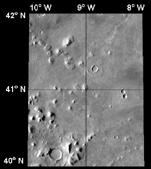
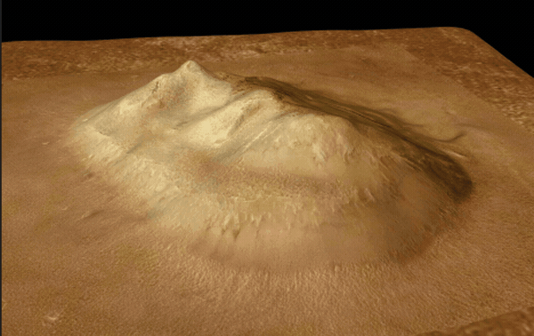
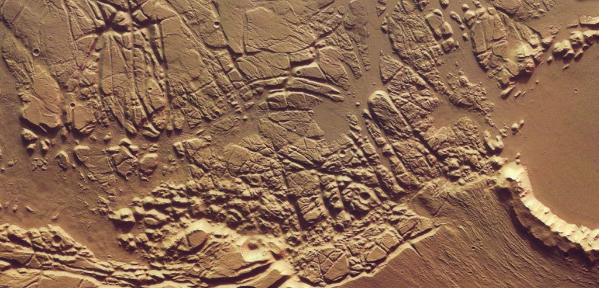
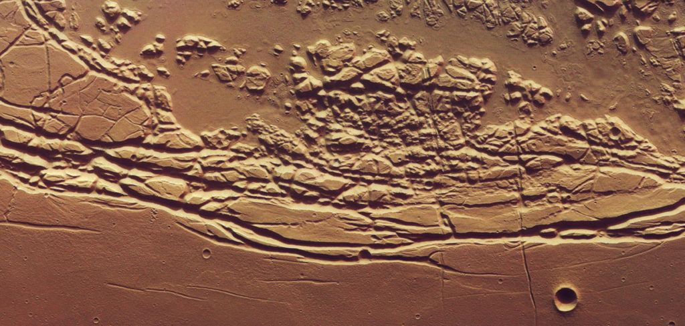
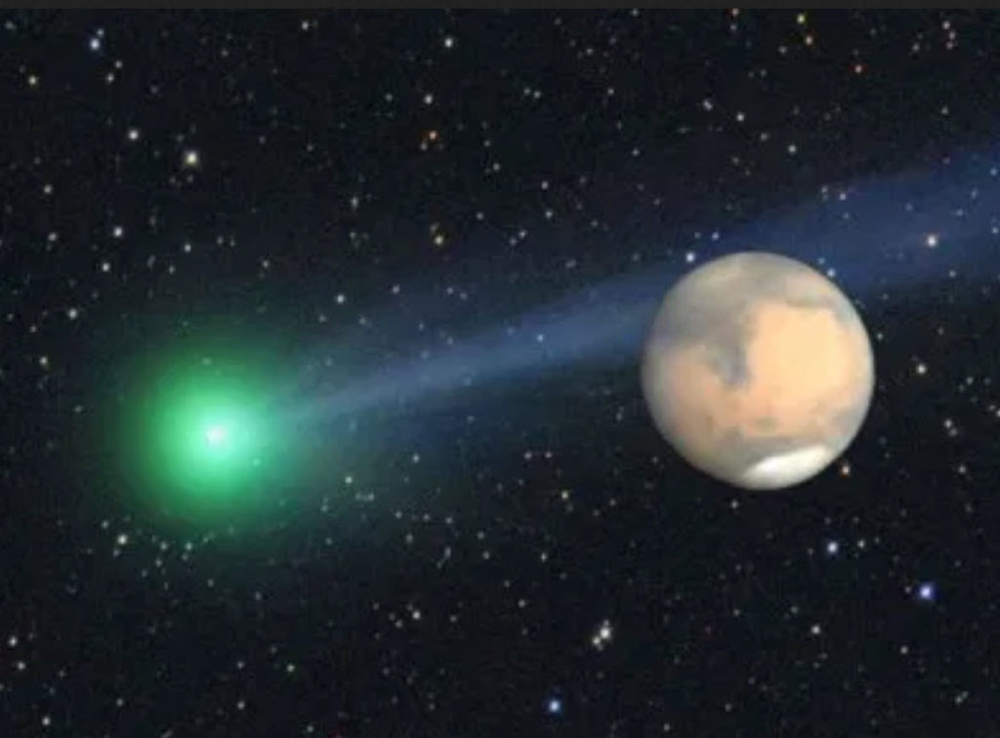

Stargate Project was the 1991 code name for a secret U.S. Army unit established in 1978 at Fort Meade, Maryland, by the Defense Intelligence Agency and SRI International to investigate the potential for psychic phenomena in military and domestic intelligence applications. The Project, and its precursors and sister projects, originally went by various code names—GONDOLA WISH, GRILL FLAME, CENTER LANE, SUN STREAK, SCANATE—until 1991 when they were consolidated and rechristened as "Stargate Project". - Wikipedia
During the operation of the “Stargate Project“, remote viewers were used to collect military intelligence via non-invasive ESP methods. In doing so, they were often quite successful, and came up with some astounding discoveries.
Often when conducting these viewing operations, the assignment would included mixed and random targets. These were used to keep the remote viewing exercises open, flexible and alive. If they failed to do this, the remote viewing staff would become exhausted and their ability to remote view would dramatically decrease. (As what happened during the Iranian hostage situation under President Jimmy Carter.)
The random targets would contain known and unknown subjects. The known targets were useful to check the accuracy of the sighting trajectory. The unknown targets were designed to create and stimulate interest and engage the remote viewers.
One such “unknown” target was the remote viewing of Mars in the remote past.
Disclaimer
While I was a member of MAJestic from 1981 through into 2006, my involvement was related to other subjects and other agendas. I did not conduct any kind of remote viewing, work with any kind of remote viewers, or had anything to do with the CIA at any level.
This information is provided as reported, and the only thing that I can provide is my comments on it at the end of the narrative report.
The report…
MARS EXPLORATION
May 22, 1984
Approved For Release 2000/d8/08 : CIA-RDP96-00788R001900760001-9
Method of site acquisition:
Sealed envelope coupled with geographic coordinates.
The remote viewing activity was conducted in double and triple blind tests. The remote viewers had zero knowledge of what would be asked of them, or what the subject would be that they were to remote view.
The sealed envelope was given to the subject immediately prior to the interview. The envelope was not opened until after the interview. In the envelope was a 3 X 5 card with the following information:
- The planet Mars.
- Time of interest approximately 1 million years B.C.
Selected geographic coordinates, provided by the parties requesting the information were verbally given to the subject during the interview.
TRANSCRIPT May 22, 1984
MON: (ROJ for 5/22 (May 22nd), time 10:09 AM.)*
(Plus 10 minutes, ready to start.)*
Remote Viewing the “Face of Mars”
Of course, at all times, the subject was not informed of the targets. He was unaware that he was remote viewing the "face on Mars" anomaly.
MON: All right now, using the information in the envelope I’ve provided, exclusively focusing your attention now, using the information in the envelope, focus on:
- 40.89 degrees north
- 9.55 degrees west

This object is the "famous" "Mar's Face" of the giant "face of Mars". You can find out more about this geologic feature, or mountain on Wikipedia; The Face on Mars refers to a photo of a feature that looks like a human face on the surface of the planet Mars, specifically in the area of Cydonia Mensae, an area of Mars adjacent to the border between the Northern lowlands and the Western Arabia Terra. The mensae are characterized by knobs and mesas (mensae is the plural of mensa, which means table). It was first discovered by the Viking 1 orbiter. Project scientist Harold Masursky joked about it that "This is the guy that built all of Lowell’s canals." NASA released the photo to the public and pointed out this cool trick of light, shadows, and low-resolution orbital photography. However, true believers know that the feature was actually built by aliens and that NASA has been trying to cover that up (NASA's mission to search for evidence of extraterrestrial life or civilizations is actually a lie orchestrated by Reptoids). One of the most persistent supporters of this delusion is Richard C. Hoagland. Hoagland won the 1997 Ig Nobel Prize in Astronomy for his book The Monuments of Mars: A City on the Edge of Forever. In the years since the first image, high resolution photographs with shadows falling in other directions have shown the idea of a "face" to be false. Over 40 years, resolution of the imagery has steadily improved from 44.7 m/px to 0.25 m/px.
SUB: …… I want to say it looks like ah
SUB: …. I don’t know, it sort of looks …
SUB: …. I kind of got an oblique view of a ah …. pyramid or pyramid form. It’s very high, it’s kind of sitting in a …. large depressed area.
MON: All right.
SUB: It’s yellowish, ah …. okra colored.

This "face on Mars" was identified as a yellowish colored geologic mountain that has a pyramidal form that sits within a large depressed area. In no way, did the subject identify it as artificial, shaped or resembling a face in any way.
So while the rest of the world were all speculating about “aliens” on Mars, the CIA, through the “Stargate Program”, knew the truth.
The so called "Face on Mars" can be seen slightly above center and to the right in this THEMIS visible image. This 3-km long knob, located near 10°N, 40°W (320°E), was first imaged by the Viking spacecraft in the 1970's and was seen by some to resemble a face carved into the rocks of Mars. Since that time the Mars Orbiter Camera on the Mars Global Surveyor spacecraft has provided detailed views of this hill that clearly show that it is a normal geologic feature with slopes and ridges carved by eons of wind and down slope motion due to gravity. -NASA JPL
Mars – One million years ago.
MON: All right.
MON: Move in time to the time indicated in the envelope I’ve provided you and describe what’s happening.
SUB: I’m tracking severe, severe clouds, more like dust storm, ah …. it’s geologic problem.
SUB: Seems to be like a ah …. …Just a minute, I’ve got to iron this out. It’s really weird.
MON: Just report your raw perceptions at this time, you’re still early in the session.
SUB: I’m looking at, at a …. after effect of a major geologic problem.
One million years ago on Mars is the target time period. We assume that Mars was created with the Earth during the formation of the solar system. Therefore this time track would indicate a period of time roughly one million years ago. This is relatively recent. Our solar system is 4 - 5 billion years old. All the dinosaurs were extinct, and the Earth was populated by mammals. Proto-humans were walking about on the earth. About 1 to 3 million years ago and we saw the evolution of the earliest hominids including Sahelanthropus and Australopithecus. Yet, most of the earth would be unpopulated by native intelligent humanoids. As far as we know, Mars would be much as it appears today. However, we have no idea what it was like over the years.
MON: Okay, go back to the time before the geologic problem.
SUB: ….. Um, total difference, it’s ah ….
SUB: …. before there’s no ah …. ah I don’t know,…. oh hell, it’s like mountains of dirt….
SUB: …. appear and then disappear when you go before.
SUB: See ah …. large flat surfaces, very ah ….smooth …. angles, walls, they’re really large though, I mean they’re megalithic, ah ….
The subject reports that Mars experienced some kind of geologic problem around one million years ago (or so). When asked to remote view to a time preceding this "event", Mars is quite different... but still has mountains of dirt and broad expanses.
MON: All right.
MON: At this period in time now before the geologic activity, look around, in and around this area and see if you can find any activity.
SUB: …. I’m seeing ah ….
SUB: It’s like a perception of a shadow of people, very tall …. thin, it’s only a shadow.
SUB: It’s as if they were there and they’re not, not there anymore.
This is where there are all kinds of confusion. It is LIKE shadows of people. It is LIKE someone was there and now they are not. There are many who interpret this as a civilization that had existed on the surface of Mars at some time, and that it was wiped out by a geologic event around one million years ago. This interpretation is NOT correct. The subject is giving his impressions. His impressions are that there was a presence of sorts. Some kind of influence of sorts. But it is gone.
MON: Go back to a period of time where they are there …
The monitor is referring to the shadows as if they were actual people, or intelligent beings. This is a mistake, and threw the entire session awry. The subject now has a difficult time "locking on" to the events transpiring.
SUB: …. Um …. (mumble) It’s like I get a lot of static on a line and everything…
… it’s breaking up all the time…
… very fragmentary pieces.
The subject is now confused and nothing is making sense. The monitor threw off the entire session. The subject is now trying to scan and sort things out for a "best fit" understanding...
MON: Just report the raw data, don’t try to put things together, just report the raw data.
Now the subject has latched on the "best fit" situation that closely approximates the input provided to him... He is trying to identify the source of the "influence" he detected. We do not know what that influence was.
SUB: I just keep seeing very large people, thin and tall, but they’re very large.
SUB: Some kind of strange clothes. They appear Ah …. wearing.
We do not know what the subject is viewing. It is the "best fit" events as provided by the input. The monitor is still moving forward on the belief that this is a time period of around one million years ago on Mars. However, it could be any time and any place. The subject is reporting on a species that left an "influence" on Mars one million years ago that preceded a geologic event.
Geographical Location – same time.
MON: All right, now holding in this time period, holding in this time period, I want to move from your physical location in space to another physical location, but in this time period.
Another mistake by the monitor; the subject is holding on to the time and place of the "best fit" situational vision. Not what he thinks it would be...
Move now to:
- 46.45 north
- 353.22 east

The monitor is giving geographic coordinates that is Mars, but not labeled as such. It could be anywhere. As we do not know where the subject is at this time.
Move in this time to:
- 46.45 north
- 353.22 east
SUB: …. Deep inside of a cavern, not a cavern, more like canyon.
SUB: Um, I’m looking up, up the sides of a steep wall that seem to go on forever.
SUB: And there’s like ah …. a structure with a …. it’s like the wall of the canyon itself has been carved.
Again I’m getting a very large structures, no …. ah …. no intricacies, huge sections of smooth stone.
Again, we do not know where the subject is. He is describing some kind of canyon or cavern. It's very large. With large enormous sections of smooth unadorned surfaces. At no point in time does he describe people, creatures or habitations.
MON: Do the structures have insides and outsides?
SUB: …. Yes, they’re very, it’s like a rabbit warren, corners of rooms, they’re really huge, I don’t, feel like I’m standing in one it’s just really huge. Perception is that the ceiling is very high, walls very wide.

Subject is describing a large maze like region. All very large and huge. At no point in time does he describe people, creatures or habitations. Yet, many on the internet has mistakenly taken the discussion of "tall beings" and the reference to "warrens" to represent some kind of extraterrestrial species or race on Mars. This is incorrect.
(Real time plus 22 minutes.)*
MON: Yes that would be correct.
The monitor confirms to the subject that he is indeed remote viewing the target coordinates correctly.
Geologic feature.
MON: All right, I’d like to move now to another location nearby. All right, move from this point in this time to:
- 45.86 north
- 354.1 east
SUB: They have a ah …. appears to be the end of a very large road and there’s a …. marker thing that’s very large, keep getting Washington Monument overlay, it’s like an …. obelisk.
The subject correctly described the object in the target coordinates on Mars.
Geologic Feature.
MON: All right. From this point then, let us move to another point. Move now to:
- 35.26 north
- 213.24 east
Move in this time to:
- 35.26 north
- 213.24 east
SUB: …. It’s like I’m in the middle of a …. huge circular basin …. of the range mountains by almost all the way around, …. very ragged, ragged mountains, very tall.
SUB: Basin’s very, very, very large. Scale seems to be off or something it’s just really big, everything’s big.
MON: I understand the problem just continue.
SUB: …. See just a right angle corner to something but that’s all, I don’t see anything else.
No indication of anything of interest. This description is also accurate. The monitor is providing coordinates and having the subject describe them. When they match, the monitor moves on to the next group of coordinates. All of which pretty much match the descriptions of the Mars that we view today.
Geologic Location.
MON: Okay. Then let’s move into a little different place, very close. Move from the point you are now, in this time, to:
- 34.6 north
- 213.09 east
Move now in this time to:
- 34.6 north
- 213.09 east
SUB: The cluster of squares up and down. Um..
SUB: … it’s like you want to make them square anyway. They’re almost flush with the ground and it’s like they’re connected ….
SUB: …. Something very white or reflects light.
MON: What’s your position of observation as you look at this thing that reflects light?
SUB: I’m amid ah …. oblique left angle, sun is ah… sun is weird.
Again, the subject correctly describes the geographic region as observed on the surface of Mars.
Geologic Location.
MON: Look back down at the ground now, and we’re going to move just a little bit from this place, just a little bit from this place.
- 34.57 north
- 212.22 east
MON: Very close by. Now, move over now to:
- 34.57 north
- 212.22 east
SUB: It’s like I can just perceive ah …. ah …. like a radiating pattern of some kind.
SUB: It’s like some really …. ah …. strange intersecting kind of roads that are dug into valleys, you know, where a road is just a little below the edge.
MON: Tell me about the shapes of these things.
SUB: …. They’re like real neat channels cut, they’re very deep, it’s like the road went down ….
MON: Okay. Now I have, I notice electrically you’re nulled out a little bit and I want you to stay deep and recapture your focus here.
The monitoring of the subject by medical means has indicated that there is a change in state of the subject. The monitor is telling him of that situation and asking him to keep his focus.
Geologic location.
SUB: It’s really tough, it’s seems like it’s just always very sporadic.
MON: I realize that, it’s very important that you maintain your focus. I have a movement exercise again for you and this is some considerable distance away, so holding the focus in time, remember the focus in time that you had before and moving now to:
- 15 degrees north
- 198 degrees east
MON: Take some time and get back deep.
SUB: See the …. um, intersecting ah …. whatever these are, are aqueduct type things
SUB: … these…. rounded bottom carved channels, like road beds.
SUB: See ah …. see pointed tops of something on the horizon. Even the horizon looks funny and weird, it’s like ah …. different …. misty, like it’s really far away …. very vague.
Geologic Location.
MON: Okay. Another movement now to:
- 80 degrees south, 80 degrees south
- 64 degrees east, 64 degrees east
MON: Move now in this time to:
- 80 degrees south
- 64 degrees east.
SUB: See pyramids …. Can’t tell if it’s overlay or not ’cause they’re different.
Pyramid like structures are what is actually identified at this geographic location by photographs. So the subject correctly identified the area. This correct identification of geographic locations on Mars is consistent with all the earlier target coordinates.
MON: Okay. Do these pyramids have insides and outsides?
SUB: …. Um-hum, got really, ah …. it’s getting. …. both, and they’re huge ….
Subject states that the pyramids have insides and outsides. This is suggestive of buildings, or structures.
SUB: It’s an interesting perception I’m….
MON: (I think that he’s losing his ability to move accurately, but he is attracted to things that are interesting, so we’re going to go with his own, we’re going to let him go ahead and explore what seems to be interesting to him rather than move on the targets indicated here.)*
The structures...
SUB: It’s filtered from storms or something.
MON: Say that again, SUB.
SUB: They’re like shelters from storms.
MON: These structures you’re seeing?
SUB: Yes. They’re designed for that.
Discovery. The pyramidal structures are shelters.
MON: All right. Go inside one of these and find some activity to tell me about.
(Plus 37 minutes real time.)*
SUB: Different chambers, … but they’re almost stripped of any kind of …. furnishings or anything…
SUB: …. it’s like ah …. strictly functional place for sleeping or that’s not a good word, hibernation’s, some form, I can’t…
SUB: …. I get real raw inputs, storms, savage storm, and sleeping through storms.
MON: Tell me about the ones who sleep through the storms.
SUB: …. Ah …. very …. tall again, very large …. people, but they’re thin, they look thin because of their height and they dress like in, oh hell, it’s like a real light silk, but it’s not flowing type of clothing, it’s like cut to fit.
The inhabitants of the pyramidal shelters are tall humanoids.
MON: Move close to one of them and ask them to tell you about themselves.
SUB: They’re ancient people. They’re ah ….. they’re dying, it’s past their time or age.
MON: Tell me about this.
SUB: They’re very philosophic about it. They’re looking for ah …. a way to survive and they just can’t.
(Plus 40 minutes, definite voltage reversal.)*
SUB: Can’t seem to get their way out, they can’t seem to find their way out, …. so they’re hanging on while they look or wait for something to return or something coming with the answer ….
MON: What is it they’re waiting for?
SUB: …. They’re ah …. evidently was a …. a group or a party of them that went to find ah …. new place to live.
They are in a shelter waiting to leave the planet.
SUB: It’s like I’m getting all kinds of overwhelming input of the …. corruption of their environment.
SUB: It’s failing very rapidly and this group went somewhere, like a long way to find another place to live.
MON: What was the cause of the atmospheric disturbance or the environment disturbance?
SUB: I see a picture of a, picture of like a, oh hell, it’s almost a warp in a, oh god, this is difficult. It’s like going, let’s see—
MON: The raw data?
SUB: Oh, I get a globe …. ah …. it’s like a globe that goes through a comet’s tail or …. it’s through a river of something, but it’s all very cosmic. It’s like space pictures.
Some kind of galactic or planetary event within the solar system.

MON: All right, now before you leave this individual, ask him if there is any way that you, ask him if he knows who you are and is there any way you can help him in his present predicament?
SUB: …. All I get is wait.
SUB: Doesn’t know who I am. a hallucination or something. …. that they must just Think he perceives I’m ….
MON: Okay, when the others left, these people are waiting, when the others left, how did they go?
SUB: …. Get an impression of ah …. Don’t know what the hell it is. It looks like the inside of a larger boat. Very rounded walls and shiny metal.
Spaceship. Very functional.
MON: Go along with them on their journey and find out where it is they go ….
SUB: …. Impression of a really crazy place with volcanoes and gas pockets and strange plants, very volatile place, it’s very much like going from the frying pan into the fire.
Sounds like Earth in upheaval.
SUB: Difference is there seems to be a lot of vegetation where the other place did not have it. And different kind of storm.
Sounds like Earth in upheaval.
MON: All right it’s time to come back now to the sound of my voice into present time to right now the 22nd of May 1984, the sound of my voice. Move now back to the room, back to the sound of my voice, back further now to the sound of my voice on the 22nd of May 1984.
END OF INTERVIEW
NOTE: ()* Indicates monitor comment recorded but not heard by the subject.
Approved For Release 2000/d8/08 : CIA-RDP96-00788R001900760001-9
Commentary
While the first object that is remote viewed is the (so called) face on Mars, much of the remote viewing activity described easily verifiable objects and geographical landmarks on the surface of Mars. Each time a coordinate was provided, the subject correctly viewed it and described it.
The “face” was CIA confirmed in 1984 to be an ordinary mountain. This wasn’t publicly confirmed by NASA until 2002.
- 40.89 degrees north, 9.55 degrees west (Face on Mars.)
- 46.45 north, 353.22 east (Geologic maze.)
- 45.86 north, 354.1 east (Obelisk like feature.)
- 35.26 north, 213.24 east (Crater surrounded by mountains.)
- 34.6 north, 213.09 east (Cluster of square geologic features.)
- 34.57 north, 212.22 east (Radiating channels.)
- 15 degrees north, 198 degrees east (Aqueduct like things.)
- 80 degrees south, 64 degrees east. (Pyramids)
This entire remote viewing event is interesting.
Aside from confirming that the remote viewer has accurately described eight (x8) separate geologic and topographic features on Mars by cartesian coordinates alone, but he also confirms that the nonsense about a “face on Mars” is false.
However, there are somethings that are really interesting about this session;
- A cataclysmic event took place on Mars about one million years ago.
- The presence of a tall, thin species, living inside shelters, waiting to leave the planet.
- Transport of the tall species to another world that is very different.
I cannot confirm whether this remote viewing of an alien species is accurate.
Certainly the idea that an indigenous advanced race of creatures had a civilization on Mars that perished during a cataclysmic event is a bit of a stretch, though it makes for fine Science Fiction adventure. It was the kind of things that I enjoyed watching as a boy.
It’s fun to speculate on the impressions made by remote viewers. As such, it is really easy to get “carried away” and embrace ideas of an indigenously inhabited Mars that destroyed itself (or was destroyed) with the inhabitants fleeing to earth.
From my understanding, Mars has been a pretty bare planet for the last few billion years or so. Mars is a bleak, desert-like planet that is also very heavily cratered. There are huge volcanoes, global dust storms, and great sand dune fields. In addition, what look like dry river beds abound on the planet. While it did have a rather thick atmosphere that enveloped the planet in the first billion or so years of it’s existence, that gradually evaporated away to a rather destitute surface terrain that we see today. What we see today is pretty much how Mars looked for the last handful of millions of years.
It is possible that non-indigenous species somehow got stranded on Mars during a cataclysmic event. There are numerous species that could fit this description.
As such, in my mind, it is not unrealistic to consider the possibility of a [1] large global cataclysmic event on Mars [2] one million years ago, that [3] affected any extraterrestrial colonies present on the planet at that time. As such, the inhabitants would need to [4] create shelter, and then await [5] egress from the hostile environment. The shelter would be bare and functionally bleak, and the inhabitants would spend their time waiting to escape.
Therefore, it is not unrealistic (if not popular) to embrace the possibility that one of the older extraterrestrial colonies (and facilities) needed to be evacuated when Mars went through geologic changes around one million years ago.
If you enjoyed this, you might find pleasure in other articles in the OOPARTS section…